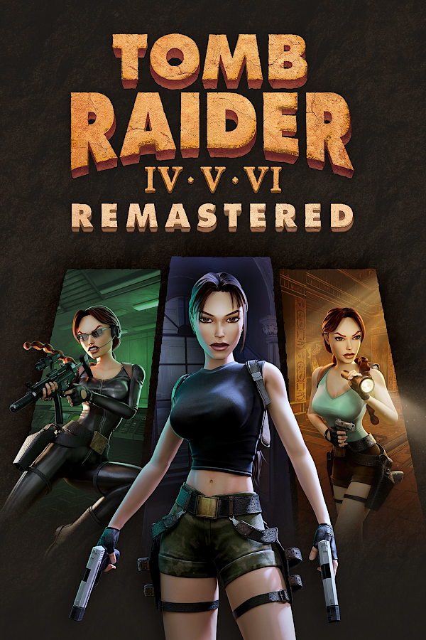

Tomb Raider IV-VI: Remastered
Every archived year-end list appearance, including placement and points earned.
About the Game
Play the next series of Tomb Raider adventures in this remastered collection of the Darkness Trilogy. Included Game Titles: Tomb Raider: The Last Revelation – Lara Croft discovers the lost tomb of the Egyptian God Set, unwittingly unleashing him and fulfilling an ancient prophecy—one that plunges mankind into darkness. Tomb Raider: Chronicles – Following the events of The Last Revelation, Lara Croft is buried in an Egyptian tomb and is presumed dead. At her memorial, those closest to her reminisce about secrets from her past. Tomb Raider: The Angel of Darkness – Accused of murder, Lara becomes a fugitive on the run, while uncovering a sinister conspiracy involving alchemical experiments and the search for ancient artifacts.
| Released | 2025-02-14 |
|---|---|
| Developer | Aspyr Media, Crystal Dynamics |
| Publisher | Aspyr |
| Genres | Action, Adventure, Puzzle |
| Platforms | PC, Xbox Series S/X, PlayStation 4, Xbox One, PlayStation 5, Nintendo Switch |
SingleplayerFull controller supportAtmosphericThird PersonExplorationAction-AdventureThird-Person ShooterDarkRetroMystery3DParkour
Where to Buy
GOG Xbox Store PlayStation Store Epic Games Nintendo Store Steam
Game information provided by RAWG.
Points by Year
List History
| Year | Source | List | Placement | Points |
|---|---|---|---|---|
| 2025 | SUPERJUMP | 50 Outstanding Games Released in 2025 | Unranked | 1 |